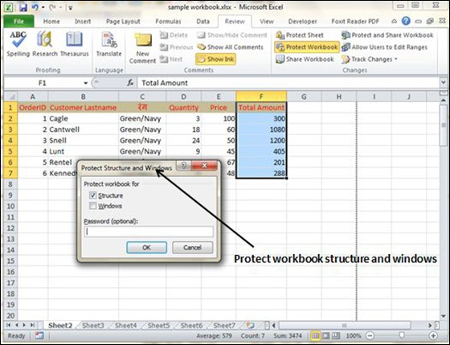
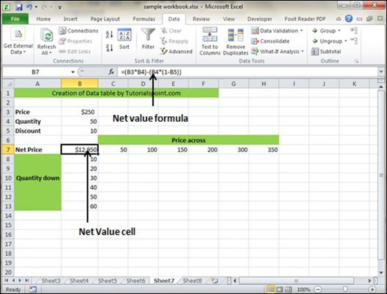
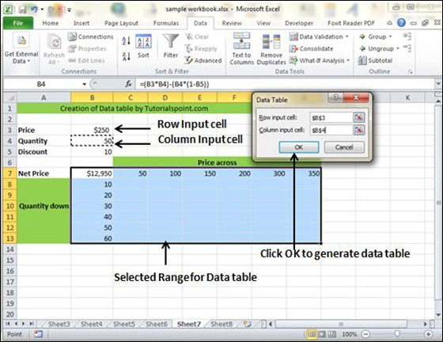
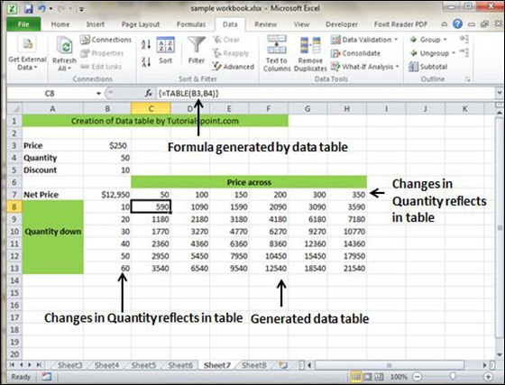

In Excel, a Data Table is a way to see different results by altering an input cell in your formula. Data tables are available in Data Tab » What-If analysis dropdown » Data table in MS Excel.

Now, let us see data table concept with an example. Suppose you have the Price and quantity of many values. Also, you have the discount for that as third variable for calculating the Net Price. You can keep the Net Price value in the organized table format with the help of the data table. Your Price runs horizontally to the right while quantity runs vertically down. We are using a formula to calculate the Net Price as Price multiplied by Quantity minus total discount (Quantity * Discount for each quantity).

Now, for creation of data table select the range of data table. Choose Data Tab » What-If analysis dropdown » Data table. It will give you dialogue asking for Input row and Input Column. Give the Input row as Price cell (In this case cell B3) and Input column as quantity cell (In this case cell B4). Please see the below screen-shot.

Clicking OK will generate data table as shown in the below screen-shot. It will generate the table formula. You can change the price horizontally or quantity vertically to see the change in the Net Price.
